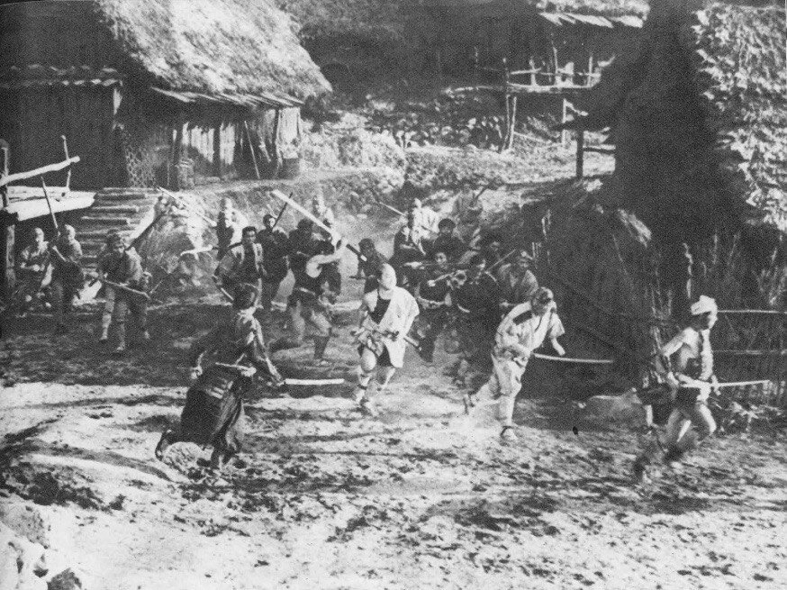

Seven Samurai, Still
Akira Kurosawa · 1954 · Publicity photograph, black and white
In copyright. Look and learn: shown for study, not for download.
This photograph appeared in the Japanese magazine Sekai Geino Gaho in May 1954. Filming began on 27 May 1953 and took 148 working days. The film ran out of money midway, and Toho's total of 210 million yen made it the most expensive Japanese film yet. The village was filmed at five separate locations; forty horses were brought in but could not be moved between them, so local horses were painted to match. For the final battle Akira Kurosawa shot with several cameras at once and telephoto lenses.